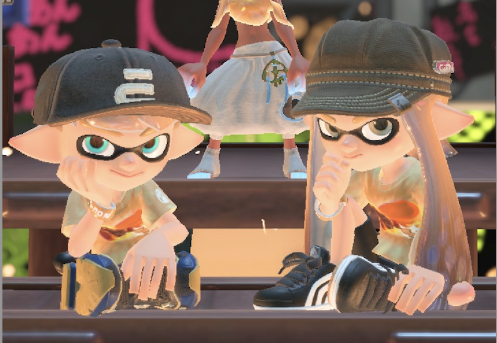
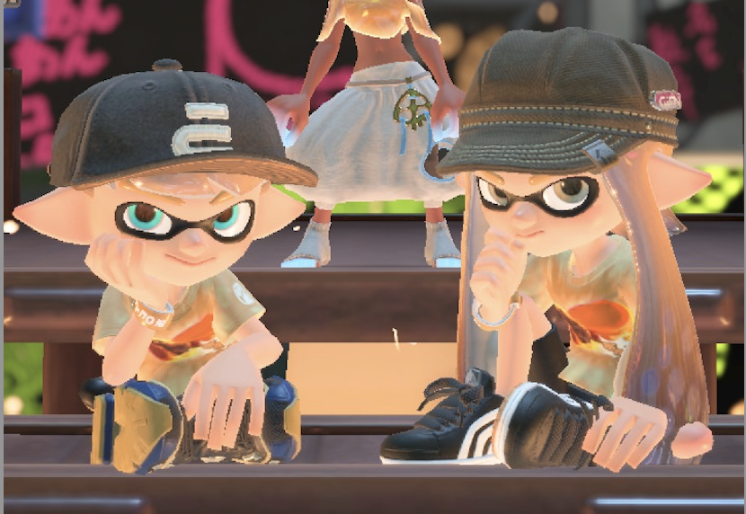

矢島美優
 

開志専門職大学情報学部2年の矢島です。
趣味はスプラトゥーン（ナワバリかサモラン）やプロセカで遊ぶことです。
一人でも遊びますが友達と遊ぶのが一番好きです。
また、ゲーム実況を見るのが好きでマイクラ実況を見ています。
よく見ているマイクラ実況者様（敬称略）
日常組 https://www.youtube.com/@Nichijo_Gumi
〇〇の主役は我々だ https://www.youtube.com/@wrwrd
最近はストグラをよく見ていて特に警察視点や救急隊、一部ギャングの視点を見たりしています。 まだ見始めたばかりの新参者なのでおすすめの視点があったらぜひ教えて欲しいです。
| 見ている視点/配信者様（敬称略） | ||
| 警察視点 青井らだお役/らっだぁ |
Youtubeチャンネル | |
| 救急隊視点 赤兎がみとも役/赤髪のとも |
Youtubeチャンネル | |
| 救急隊視点 鳥野ぎん役/こるぺん |
Youtubeチャンネル | |